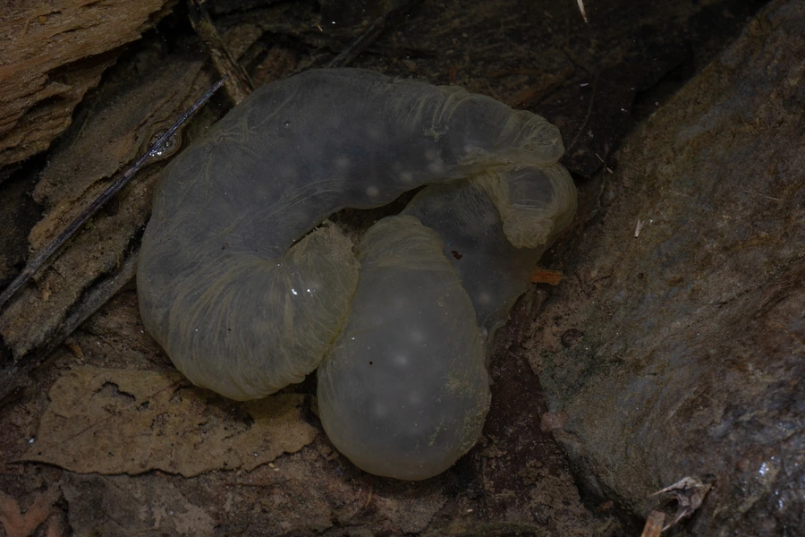

两栖动物 · 动物界
中国小鲵 Hynobius chinensis

中国东南部山区的稀有小型有尾类，体形似小鲵，幼体在水中生活，因栖息地破坏而数量稀少，属国家二级保护动物。
- 分类
- 门脊索动物门纲两栖纲目有尾目科小鲵科属小鲵属
- 栖息环境
- 山区溪流、水潭附近的潮湿林地、落叶层与石缝
- 地理分布
- 中国浙江、福建、湖北等东南部山区的有限区域
- 保护级别
- IUCN 濒危（EN）；中国国家二级保护动物
物种志
中国小鲵体长 10–15 厘米，头部扁平，吻端钝圆，眼睛较小，皮肤光滑而湿润，背面呈灰褐、黄褐或暗褐色，缀有深色斑点，腹面浅灰或淡黄；四肢短小，前肢四趾、后肢五趾，尾部侧扁，适合在水中游动。
它分布于中国浙江、福建、湖北等地的山区，生活在海拔较高的溪流、水潭附近的潮湿林地与石缝中，多在夜间活动，捕食蚯蚓、昆虫和其他小型无脊椎动物。每年冬春之交繁殖，雌体在溪流石缝或水草间产下透明的卵袋，每个卵袋含数十枚卵，幼体孵化后用外鳃呼吸，在水中生活数月后变态上陆。由于森林开发、溪流污染和水体改造，其栖息地不断缩小，中国小鲵野外数量稀少，被列为国家二级保护动物。
形态与习性
- 食性蚯蚓、昆虫及其他小型无脊椎动物
- 体长10–15 cm
- 寿命约 8–12 年
- 繁殖卵生，卵袋含数十枚卵，幼体水生后变态
- 活动节律夜行性，白天藏在石缝落叶中
- 栖息地清凉的山溪与水潭附近，对水质敏感
趣味知识
- 中国小鲵的幼体长有外鳃，在水中生活数月后才变态上陆。
- 它主要在冬春之交繁殖，卵产在溪流石缝中的透明卵袋里。
- 中国小鲵对水质和森林环境敏感，是山地溪流生态的指示物种。